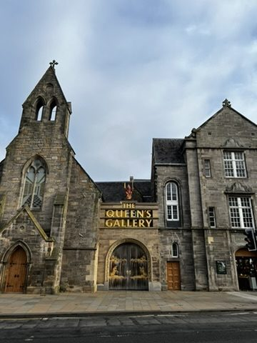
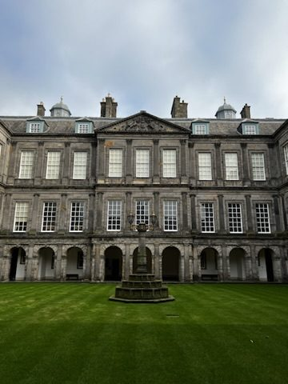
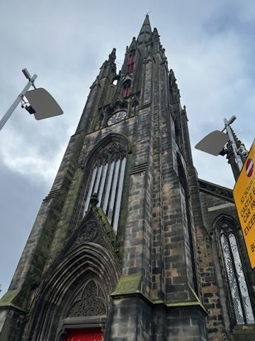
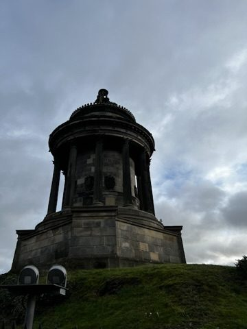

Edinburgh
The city looked best in stone and grey light.
Edinburgh has a strong visual identity even in simple photos: old facades, narrow vertical lines, palace lawns, and that slightly dramatic grey sky that makes everything feel older.



